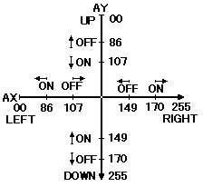

★INDEX
▲
|STN-30
|STN-31
|STN-32
|STN-34
|STN-35
|STN-36
|STN-38
▼
★INDEX
▲
|STN-30
|STN-31
|STN-32
|STN-34
|STN-35
|STN-36
|STN-38
▼
発行番号： | STN-32 | ||||||
|---|---|---|---|---|---|---|---|
発 行 日： | 95/04/04 | ||||||
メディア： | ●共 通 | ○CD-ROM | ○カートリッジ | ○その他 | |||
関 連： | ○プログラム | ●ハード | ○マニュアル | ○ツール | ○ゲーム | ○バグ | ○その他 |
情報区別： | ○新 規 | ○変 更 | ●追 加 | ||||
重 要 度： | ●厳 守 | ○推 奨 | ○参 考 | ○その他 | |||
添付資料： | ●無 | ○有 | |||||
件名補足： | |||||||
| bit７ | bit６ | bit５ | bit４ | bit３ | bit２ | bit１ | bit０ | |
|---|---|---|---|---|---|---|---|---|
| ペリフェラルID | ０ | ０ | ０ | １ | ０ | １ | ０ | １ |
| １ｓｔデータ | Right | Left | Down | Up | Start | ATRG | CTRG | BTRG |
| ２ｎｄデータ | RTRG | XTRG | YTRG | ZTRG | LTRG | １ | １ | １ |
| ３ｒｄデータ | AX7 | AX6 | AX5 | AX4 | AX3 | AX2 | AX1 | AX0 |
| ４ｔｈデータ | AY7 | AY6 | AY5 | AY4 | AY3 | AY2 | AY1 | AY0 |
| ５ｔｈデータ | AZ7 | AZ6 | AZ5 | AZ4 | AZ3 | AZ2 | AZ1 | AZ0 |
 |
２ｎｄデータの下位３ビット［Bit2-0］=111B は将来の拡張ビットとして確保してありますのでこの値(111B)を期待したプログラミングは禁止します。 |
＜図１・デジタル値としきい値＞

| bit７ | bit６ | bit５ | bit４ | bit３ | bit２ | bit１ | bit０ | |
|---|---|---|---|---|---|---|---|---|
| ペリフェラルID | ０ | ０ | ０ | １ | １ | ０ | ０ | １ |
| １ｓｔデータ | Right | Left | Down | Up | Start | ATRG | CTRG | BTRG |
| ２ｎｄデータ | RTRG | XTRG | YTRG | ZTRG | LTRG | １ | １ | １ |
| ３ｒｄデータ | AX7 | AX6 | AX5 | AX4 | AX3 | AX2 | AX1 | AX0 |
| ４ｔｈデータ | AY7 | AY6 | AY5 | AY4 | AY3 | AY2 | AY1 | AY0 |
| ５ｔｈデータ | AZ7 | AZ6 | AZ5 | AZ4 | AZ3 | AZ2 | AZ1 | AZ0 |
| ６ｎｄデータ | ※ | ※ | ※ | ※ | １ | １ | １ | １ |
| ７ｒｄデータ | BX7 | BX6 | BX5 | BX4 | BX3 | BX2 | BX1 | BX0 |
| ８ｔｈデータ | BY7 | BY6 | BY5 | BY4 | BY3 | BY2 | BY1 | BY0 |
| ９ｔｈデータ | BZ7 | BZ6 | BZ5 | BZ4 | BZ3 | BZ2 | BZ1 | BZ0 |
★INDEX
▲
|STN-30
|STN-31
|STN-32
|STN-34
|STN-35
|STN-36
|STN-38
▼